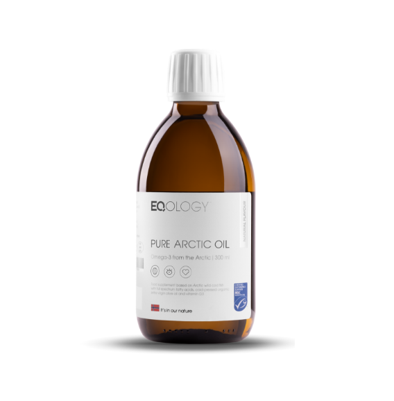
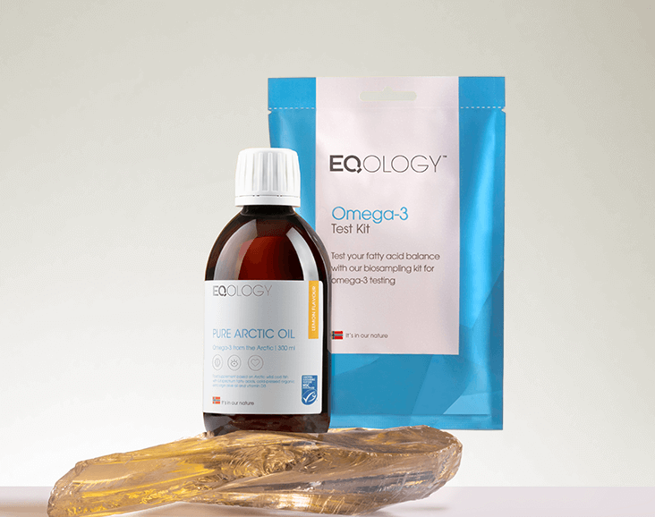
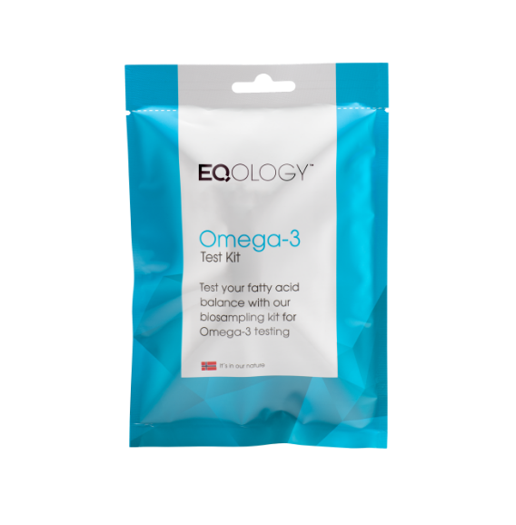

01
Prenez rendez-vous
Vingt minutes en visio. Vous posez toutes vos questions, en toute transparence.
Webinaire Eqology
Trente minutes avec Yves Coignard sur ce que la recherche documente et ce que vous pouvez proposer en consultation.

30 000
à 36 000 milliards
de cellules par corps
Le déroulé
Du mécanisme cellulaire à l'usage en consultation. Les parties 1 et 3 restent scientifiques. La partie produit est annoncée comme telle.
Ce que vous en repartez avec : une lecture du mécanisme d'action utilisable en consultation, les repères de dosage et les critères de qualité d'une huile, et le cadre exact de ce qui peut être affirmé auprès d'un consultant.
L'échelle réelle du sujet, où se logent l'EPA et le DHA dans l'organisme, et pourquoi ils ne se comportent pas de la même façon. Le mécanisme qui met en concurrence oméga-6 et oméga-3 sur les mêmes voies enzymatiques.
Ce qui distingue une huile d'une autre : origine, concentration en EPA et DHA, conditionnement. Eqology, fondée en Norvège en 1998, et sa gamme Pure Arctic Oil.
Systèmes osseux, musculaire, digestif, cardiovasculaire et nerveux, en distinguant ce qui est solidement documenté de ce qui relève de travaux encore en cours.
Comment le proposer en consultation, l'accompagnement proposé et le complément de revenu associé.
Le réseau
50 professionnels, c'est le maximum que nous pouvons accompagner correctement sur une année. 28 places sont prises depuis janvier.
28
professionnels de la nutrition et de la santé naturelle accompagnés depuis le début de l'année
22
places encore ouvertes pour cette année
50
le maximum que nous pouvons suivre correctement
Aux plus rapides
Vous prenez un abonnement et recevez le pack de bienvenue de 250 €, que nous vous remboursons : l'huile Pure Arctic Oil et le test sanguin oméga-3, pour mesurer votre propre indice avant d'en parler à un consultant.

22 packsCe qu'il y a dans le pack
Un prélèvement sanguin au bout du doigt. Les résultats arrivent sous trois semaines et montrent le ratio oméga-6/oméga-3. Vous le faites d'abord sur vous, puis en consultation. Un second test quatre à six mois plus tard rend la progression visible.
T0
Vous mesurez le profil de départ dès la première consultation.
4 à 6 mois
Vous re-testez. Le chiffre bouge, le suivi s'installe de lui-même.

La suite
Vous posez toutes vos questions. Ensuite, nous vous accompagnons sur le long terme.
Vingt minutes en visio. Vous posez toutes vos questions, en toute transparence.
Recevez le pack de bienvenue de 250 €, que nous vous remboursons. Tous les supports sont prêts.
Dès que vous êtes prêt. L'équipe vous suit à chaque étape, sur le long terme.
Il reste 22 places
Prenez rendez-vous
Cinq questions, deux minutes. Un conseiller YAC vous rappelle sous 24 h.
Il faut avoir pris le produit et mesuré son propre indice avant de le recommander. C'est la base d'une démarche honnête auprès de vos consultants, et Eqology en fait une condition d'entrée. Le pack existe pour ça.
Vous répondez à cinq questions sur votre pratique, puis un conseiller YAC vous rappelle sous 24 h. L'échange dure vingt minutes et vous engage à rien. Le pack part ensuite.
La gamme couvre l'enfant, l'adulte, le sportif et le régime végétalien. Les formules sont halal, kascher, sans gluten et sans lactose, avec une version vegan à base de microalgues.
Certaines formulations sont officiellement reconnues et se prononcent telles quelles : 250 mg/jour d'EPA et DHA contribuent à une fonction cardiaque normale, 250 mg/jour de DHA au maintien d'une fonction cérébrale et d'une vision normales. Sur les autres sujets, la formulation reste au conditionnel, sans promesse de résultat ni allusion à un traitement. Le webinaire détaille ce cadre.